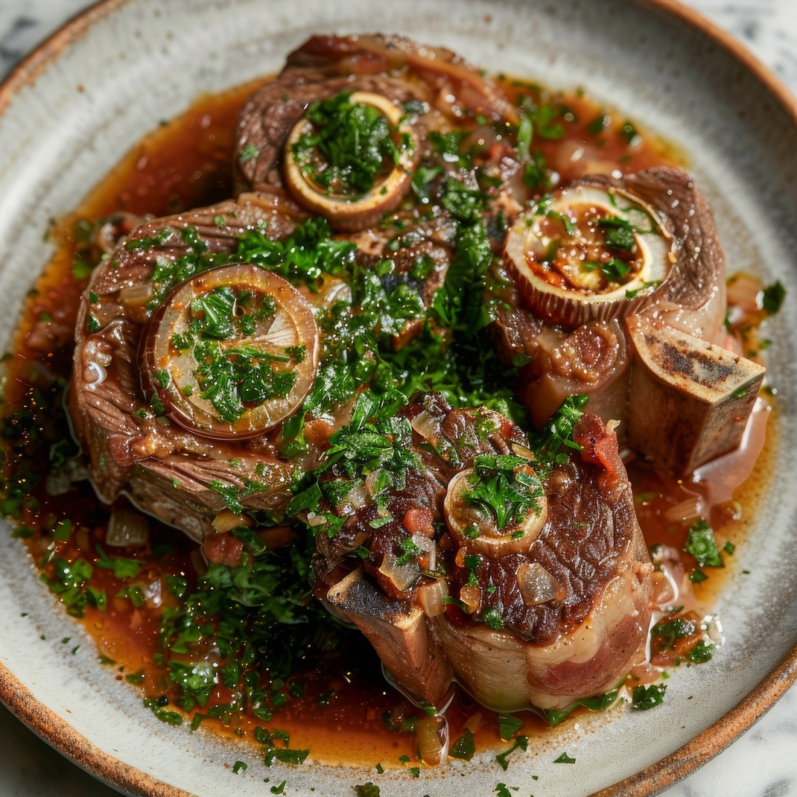

Osso Bucco

Description
Osso bucco originates from Lombardy, Italy featuring veal or beef shanks braised with vegetables, wine and beef stock. It's often seasoned with a bright zesty topping called gremolata and is traditionally served with risotto, polenta or rice.
Ingredients
- Olive oil
- 4 cross cut veal or beef shanks
- 1/2 cup diced carrot
- 1/2 cup diced celery
- 1 large diced onion
- 4 cloves diced garlic
- 3-4 sprigs of fresh thyme
- Flour for dusting shanks
- 2 table spoons tomato paste
- 1/2 litre of wine
- Beef stock
Steps
- Season shanks, dreadge in flour, add olive oil to saucepand on medium high heat. Brown shanks on both sides, remove from pan and set aside.
- In the same pan, saute onion, carrot, celery and garlic on meduium heat until onions are soft and translucent.
- Add tomato paste, continue cooking for 10 to 15 minutes, stirring continuously.
- Increase heat, deglaze with wine and leave to simmer until wine reduces by half.
- Add shanks back into pan and add enough stock so that it comes a lttle more than half way up shanks. Add thyme sprigs.
- Bring to a simmer and place in preheated oven for 3 to 3 1/2 hours.
Home